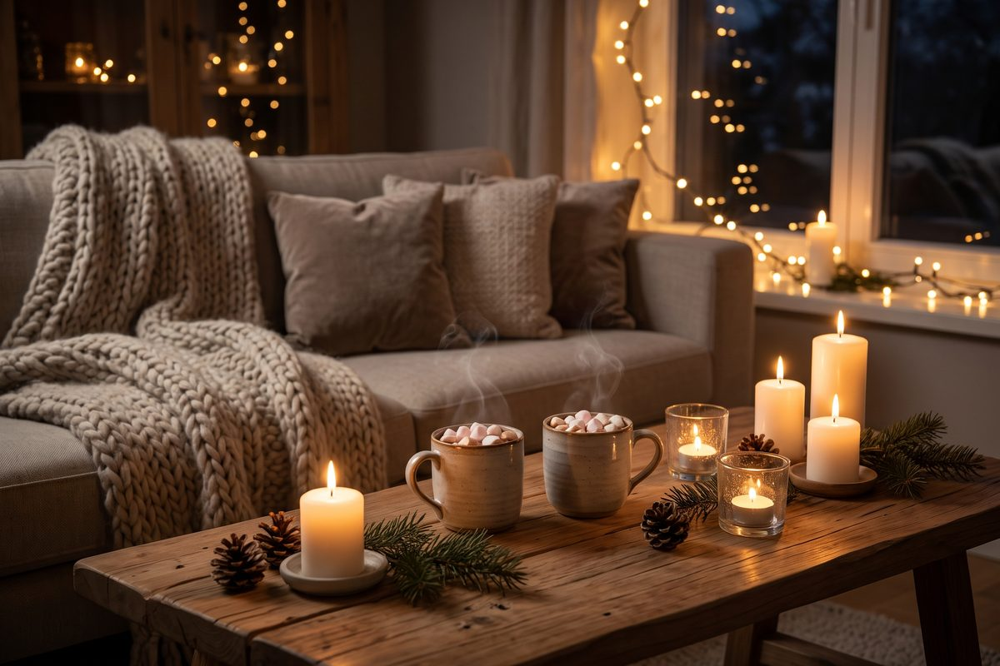

Idées de soirée en amoureux à la maison pour l'hiver

EnregistrerIl n'y a pas besoin de sortir ni de dépenser pour passer une belle soirée à deux. L'hiver, avec son froid et ses longues nuits, est même la saison idéale pour transformer son salon en cocon romantique. Voici de quoi réussir une soirée en amoureux à la maison, de la plus simple à la plus mémorable.
Poser une ambiance qui change tout
Une soirée réussie commence par l'atmosphère. Quelques gestes suffisent à sortir du quotidien.
- Baissez les lumières, allumez des bougies, choisissez une playlist douce.
- Rangez les écrans hors de vue. Une vraie soirée à deux, c'est sans téléphone.
- Dressez une jolie table, même pour un repas simple. Le soin mis dans le décor fait toute la différence.
Des idées pour une soirée à deux réussie
Une fois l'ambiance posée, place au moment partagé. L'idée n'est pas d'en faire trop, mais d'être vraiment ensemble.
- Cuisinez à quatre mains un plat que vous n'avez jamais tenté, avec un verre de vin.
- Refaites votre premier rendez-vous, version maison, en vous remémorant vos débuts.
- Lancez un jeu de questions ou de dilemmes pour vous redécouvrir en riant.
- Construisez une cabane de couvertures et regardez un film blottis l'un contre l'autre.
- Offrez-vous un massage mutuel, avec une huile et une lumière tamisée.
Pour animer votre soirée maison
Osmooz Red
Le jeu de cartes qui transforme une soirée canapé en vrai moment à deux, sans écran et sans effort.
Lien partenaire : vous soutenez le site sans payer plus cher.
Faire de ces soirées un rituel
La magie d'une soirée à deux, c'est de pouvoir la reproduire. Instaurez un rendez-vous hebdomadaire, un soir rien qu'à vous, et vous verrez votre complicité grandir semaine après semaine. Besoin d'idées pour ne jamais tomber en panne d'inspiration ? Notre Kit des Amoureux vous en donne cinquante-deux, une pour chaque semaine de l'année. Pour la fête des amoureux, voyez aussi nos idées de cadeaux de Saint-Valentin pour sortir de la routine.
💘 Cadeau de bienvenue
Le Kit des Amoureux, offert 🎁
52 idées de rendez-vous, 80 questions, des jeux et des défis à vivre à deux : recevez notre carnet à imprimer gratuitement en rejoignant la lettre de Cupidon.
Recevoir le kit gratuit
💌 La lettre de Cupidon
Une idée pour votre couple, chaque semaine
Recevez une nouvelle idée de rendez-vous, un jeu ou un défi à tester à deux, directement dans votre boîte mail. Gratuit, et sans blabla.
Une idée par semaine. Désinscription en un clic.
Envie d'ajouter un moment ludique à votre soirée ? Voyez nos jeux de couple à faire à deux.
Si ces soirées vous manquent parce que le quotidien a pris toute la place, lisez aussi comment retrouver la complicité dans son couple.
Envie d'en faire un rendez-vous régulier ? Voyez nos résolutions de couple simples pour qu'il tienne dans la durée.